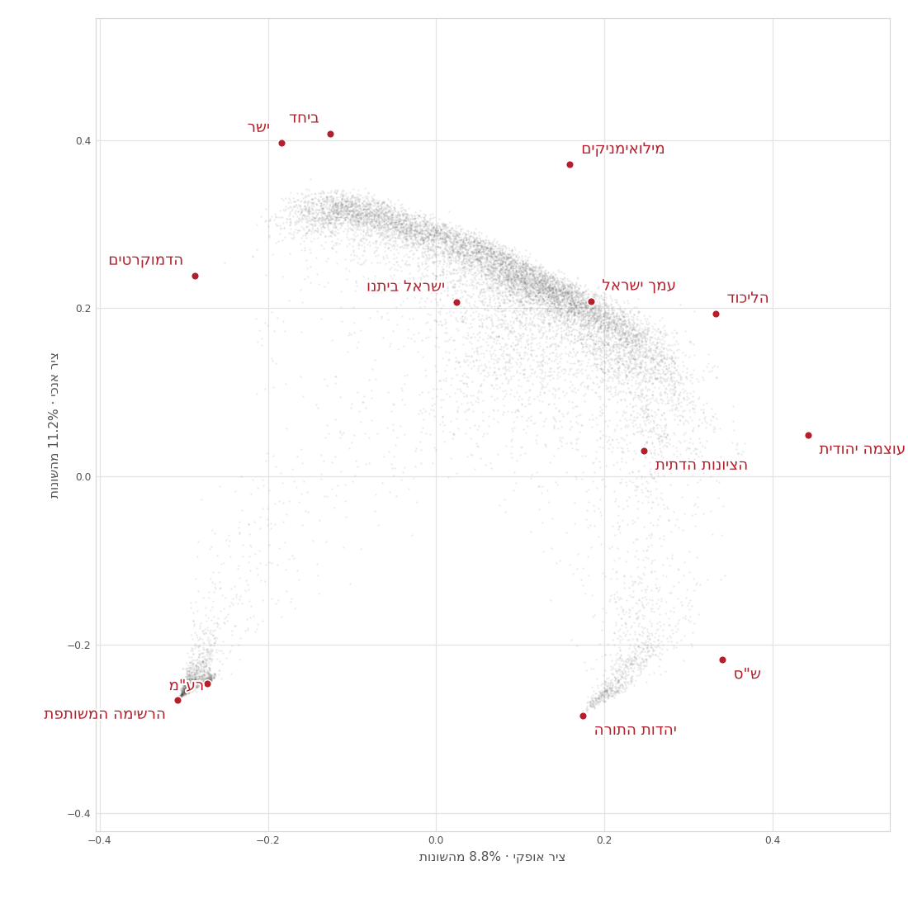
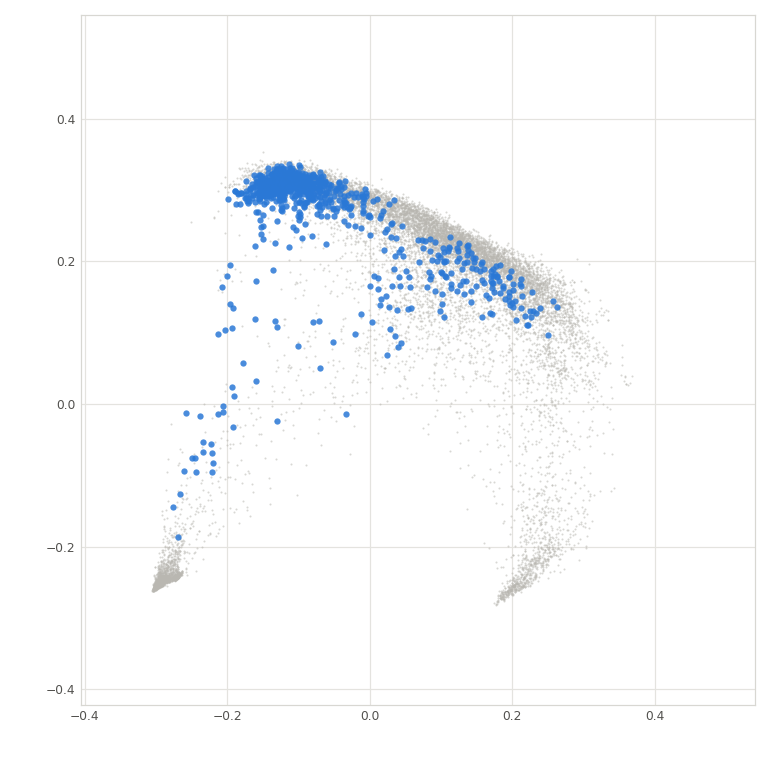
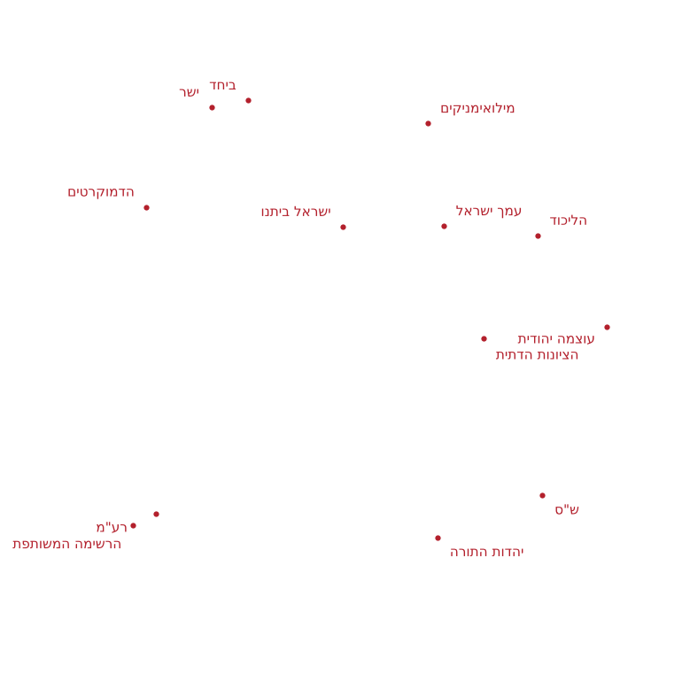

בחירות 2026 · ניתוח רכיבים ראשיים
כל קלפי בישראל, ממוקמת לפי האופן בו הצביעה. שני צירים שנגזרים מן ההצבעה עצמה מסדרים את המדינה לכדי צורה — ולכל יישוב יש בה פינה משלו.
מה רואים כאן
כל קלפי בישראל מדווחת על ספירה נפרדת משלה, ולכן אפשר לתאר כל אחת מהן לפי שיעור הקולות הכשרים שקיבלה בה כל אחת מ־36 הרשימות — 36 מספרים לכל קלפי. אלה יותר מדי ממדים מכדי להסתכל עליהם, ורובם חוזרים זה על זה: בקלפיות שבהן ש״ס מצליחה, גם יהדות התורה מצליחה.
ניתוח רכיבים ראשיים (PCA) מאתר את הכיוונים שבהם הקלפיות נבדלות זו מזו יותר מכול, ומאפשר להשאיר רק את שני החזקים שבהם. קלפיות שהצביעו דומה נוחתות זו לצד זו; קלפיות שהצביעו אחרת לגמרי נוחתות הרחק זו מזו. איש לא סיפר לשיטה דבר על גאוגרפיה, על דת או על גושים — המבנה נובע רק מחשבון הפתקים.
נכללות רק קלפיות שבהן נספרו לפחות 100 קולות כשרים, 12,880 מתוך 12,926 קלפיות.

המפלגות החרדיות והערביות יושבות יחד בתחתית, רחוקות זו מזו פוליטית אך דומות בדבר אחד: הקלפיות שלהן מצביעות כמעט רק למפלגות המגזר. בחלק העליון הקולות מתפזרים בין מפלגות רבות יותר. הציר הזה עוסק פחות באידאולוגיה ויותר במידת הריכוזיות של ההצבעה בקלפי.
הציר הפוליטי המוכר. הוא זה שמפריד בין שתי הזרועות התחתונות: הזרוע הערבית נמתחת שמאלה, הזרוע החרדית ימינה.
שני הצירים האלה נושאים יחד 19.9% מן השונות שבין הקלפיות — כחמישית ממנה. ארבע החמישיות הנותרות שוכנות בצירים שאינם מצוירים כאן, ולכן התרשים מראה את הפרוסה החזקה ביותר של המבנה, לא את כולו.
יישוב אחר יישוב
אותו התרשים מאה פעמים. בכל אחד מהם כל קלפיות המדינה נשארות כרקע, ומוארות רק הקלפיות של יישוב אחד. אפשר לדפדף במקשי החיצים או לבחור יישוב מן הרשימה.

